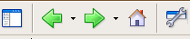
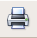

Using the Help Window
This section describes how to use the Help window (the entire window in
which this text and the Sidebar on the left are displayed).
Finding the Topic You Want
When you're viewing the Help window, click the tabs in the left frame to view
the Help contents in different ways:
- Contents shows the list of main topics.
Click a topic to read about it. Double-click to see its subtopics.
- Search lets you search the Help files.
Type a word or phrase and press Enter to see related topics. Then click
the topic you want to read about.
If your search doesn't return any topics, try typing fewer words or a
different combination of words.
- Index lists topics alphabetically.
Click an index entry
to view information on that topic.
- Glossary lists definitions alphabetically.
Click
a glossary term to see its definition.
To see information related to the Help topic you are reading, click
links in the Help window just as you would in a regular web page.
Retracing Your Steps
To retrace your steps in Help, click the buttons near the top left corner of
the Help window:

- Click the Show/Hide Sidebar button to show and hide the Sidebar contained
on the left side of the Help Window.
- Click the Back button to move back through pages you have previously
visited. It works just like the Back button in the main KompoZer
window.
- Click the Forward button to move forward through pages you have previously
visited. It works just like the Forward button in the main KompoZer
window.
- Click the Home button to see the Help and Support Center, which includes
links to support options and web-based resources.
Alternatively, print the instructions you want to follow:
- To print the whole page that's currently displayed in the Help window,
click the Print button near the top-right corner of the Help window:

- To print just a portion of the page, first click and drag to select the
area you want to print and then click the Print button.
Search Tips
If you aren't finding what you want in your search, here are a few helpful tips:
- Be sure that you are searching for something that relates to
KompoZer; this is not a general Internet search.
- Try to broaden your search - don't be too specific; terms
could be worded differently than your search.
- Avoid being too broad with your search: words like "KompoZer"
and "&vendorShortName;" could possibly return all of the pages in the help file.
[Home] [Next]
TeliuTe, 07 July 2009
Copyright © 2003-2009 Contributors to the Nvu, KompoZer
Help Documentation Project.